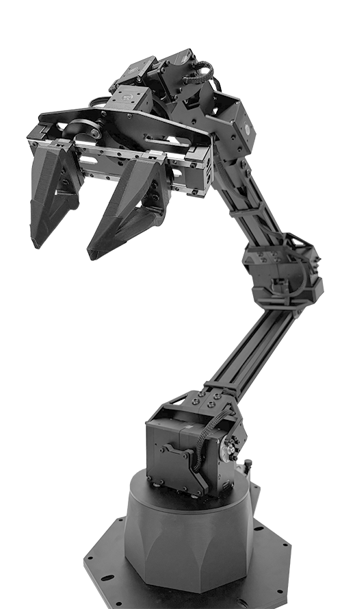

ALOHA ViperX-300 6DOF
Overview
The ALOHA ViperX-300 6DOF Robot Arm is a variant of the ViperX-300 6DOF with improvements following those proposed in ALOHA 2.
See the ViperX-300 6DOF specifications page for more details.
|  |
|
||||||||||||||||||
Note
* Working Payload for the ALOHA ViperX-300 6DOF is inside its maximum reach. If intending to use a 750g weight we recommend no more than a 50% extension of the arm.
Default Joint Limits
Default joint limits are the safe range of operation for each joint. These are set in the firmware, defined as degrees from Zero (servo centered).
| Joint | Min | Max | Servo ID(s) |
|---|---|---|---|
| Waist | -180 | 180 | 1 |
| Shoulder | -101 | 101 | 2+3 |
| Elbow | -101 | 92 | 4+5 |
| Wrist Angle | -107 | 130 | 6 |
| Forearm Roll | -180 | 180 | 7 |
| Wrist Rotate | -180 | 180 | 8 |
| Gripper | 42mm | 116mm | 9 |
Default Servo Configurations
| ID | Joint Name | Servo | Baudrate |
|---|---|---|---|
| 1 | waist | XM540-W270 | 1Mbps |
| 2 | shoulder | XM540-W270 | 1Mbps |
| 3 | shoulder_shadow | XM540-W270 | 1Mbps |
| 4 | elbow | XM540-W270 | 1Mbps |
| 5 | elbow_shadow | XM540-W270 | 1Mbps |
| 6 | forearm_roll | XM540-W270 | 1Mbps |
| 7 | wrist_angle | XM540-W270 | 1Mbps |
| 8 | wrist_rotate | XM430-W350 | 1Mbps |
| 9 | gripper | XM430-W350 | 1Mbps |